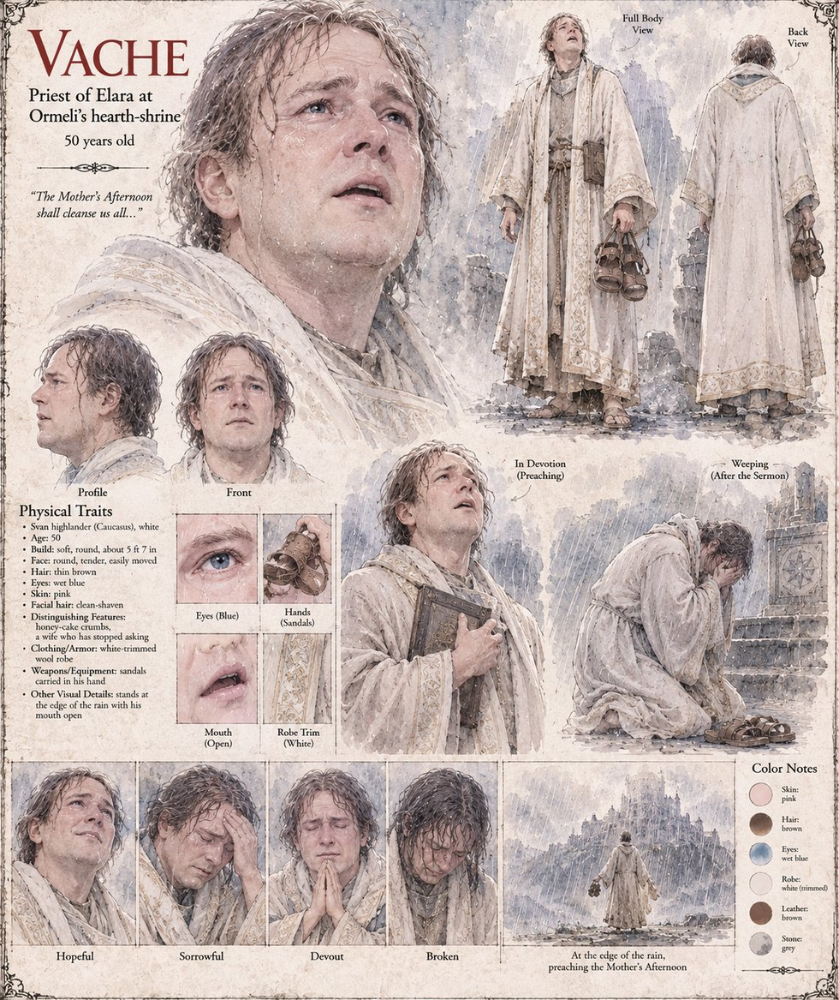

Vache
Priest of Elara at the hearth-shrine of Ormeli · first preacher of the Mother’s Afternoon · 50
The valley’s priest of Elara, a soft, round, fifty-year-old man with a weakness for honey cakes and a wife who had long ago stopped asking him to choose between them, who has served the Mother at the small hearth-shrine below the tower for thirty years as a goddess of generalities, a deity of harvests and births and the broad humane weather of the world, to whom one offers a cup of the first wine and from whom one expects nothing more specific than the continued indifference of the year. On the afternoon of the rain he arrives at a run, which for Vache is an event of some significance, and stands at the edge of it with his sandals in his hand and his mouth open. “Elara,” he says at last, with the awe of a man seeing his employer for the first time, “has never before been so exact.”
Within a week Ormeli, which on the nineteenth of Ferren had possessed no theology, possesses a fully functioning one, and the miracle has improved, retelling by retelling, from a barefoot child and a dog to the Mother’s Afternoon, a visitation, a sign, a declaration of favor toward a poor valley that had kept the Hearth Law. Vache leads the improvement with the diffident enthusiasm of a man who suspects he is being allowed to keep something. He preaches at the hearth-shrine each dusk, to a congregation that has quadrupled by the end of the first week, in a voice that grows steadier with practice, that the Mother had answered a child, that she answered children, that she had answered one child on one afternoon and might answer again; the congregation weeps and passes round the first wine and goes home convinced. Vache weeps too, and goes on weeping at intervals for the remainder of a long and comfortable career, and it never occurs to him to ask why the Mother, who had ignored thirty years of his own carefully worded petitions, should have gone out of her way to oblige the first person who asked for something specific.
The manuscript gives his age, his softness, the honey cakes, the wife, the shrine, the sandals and the sermon. The sheet’s round build of about 5 ft 7 in, round, tender, easily moved face, thin brown hair, wet blue eyes, pink skin, clean-shaven chin, white-trimmed wool robe and the book he holds to his chest are its own, as are its panels Hopeful, Sorrowful, Devout and Broken and its scenes In Devotion (Preaching), Weeping (After the Sermon) and At the edge of the rain, preaching the Mother’s Afternoon. The line it prints for him, The Mother’s Afternoon shall cleanse us all…, is not in the manuscript, which gives him the name of the doctrine but not the words.
“with the awe of a man seeing his employer for the first time”